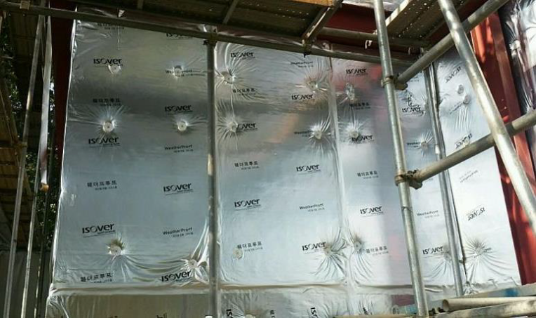

(그림1) 단열재용 패스너 |
Fastener, 우리말로는 '패스너', '화스너', '파스너' 등 다양하게 불립니다.^^ 더러는 외단열앙카(앵커)라고 하기도 하더군요. 단열재를 시공할 때 추후 탈락을 방지하기 위해 고정용 앵커로 패스너를 설치합니다. ※단열재 탈락을 방지하기 위해서는 접착모르타르를 리본앤댑(ribbon & dap)방식으로 시공하고 패스너를 함께 시공하는것이 바람직 합니다. |
패스너(그림1)의 설치는 지역의 풍압에 따른 구조계산 후 시공하게 되며, 일반적으로 1㎡에 4~6개 정도로 시공하나 탈락의 우려가 있는 곳은 추가 시공할 수 있습니다.
패스너 시공시 접착 모르타르에 의해 콘크리트 벽면에 부착된 단열재 위에 전동드릴로 드릴링 작업을 하여 콘크리트 벽체에 깊이 3cm 정도가 되도록 한 후 패스너의 원형 디스크가 단열재에 밀착될 수 있도록 타격 방식으로 고정시킵니다.
패스너는 열교차단을 위해 (그림2)의 왼쪽 그림처럼 패스너 나사의 머리가 단열재 안으로 깊이 박히는 경우와 오르쪽 그림처럼 나사머리가 들어가지 않는 경우로 구분할 수 있습니다.
(그림2) 단열재 탈락방지용 패스너 설치 사례
또한 EPS 및 XPS와 같이 rigid(단단한)한 단열재를 사용할 경우 (그림 3-좌)과 같이 T타입으로 패스너의 시공위치를 결정하게 되며, 미네랄울 및 글라스울과 같은 단열재의 경우 (그림 3-우)와 같이 W타입으로 패스너를 설치합니다.
(그림3-좌) T타입, (그림3-우) W타입

준불연 가등급 EPS 단열재 DK보드
건축용 / 외단열용 / 판넬용
문의 1855-2240